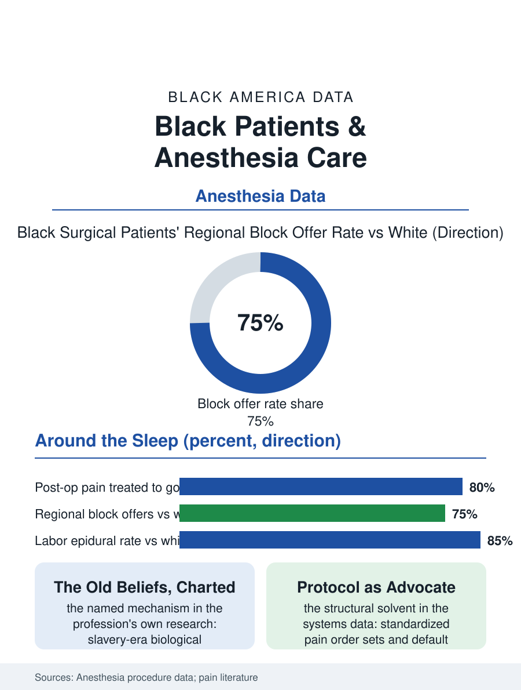

Black Public Health
Around the Sleep: Black Patients and Anesthesia
Pain discounted, blocks under-offered, epidurals uneven, in the specialty whose patient cannot speak for herself. The anesthesia file.

Anesthesia is the specialty the patient meets unconscious, and its disparities file is accordingly about the moments around the sleep: the pain assessed before and after, the regional blocks offered or withheld, the epidural placed in the laboring patient who asked and the one who was not asked the same way. The anesthesia literature's findings run in the section's familiar direction with its own particular instruments. This article reads the anesthesia file.
Pain, Assessed and Believed
The file's foundation is the pain assessment literature, among the most replicated in the disparities canon: the patient's reported pain is discounted, in the experimental and chart studies, when the patient is Black, the scores recorded lower for the same presentation, the analgesia prescribed lighter for the same score, from the emergency department's long-bone fracture, the classic study design, to the post-operative ward. The false-beliefs research gave the discount a mechanism's name, documenting the endorsement, among trainees in the study samples, of biological difference beliefs, the thicker skin, the less sensitive nerve, that belong to the slavery era's medicine, and correlating the endorsement with the undertreatment in the same respondents' clinical judgments, a finding the profession's education establishment received as an indictment of its curriculum's history silence. The pediatric file compounds it, the child's post-operative pain undertreated on the same gradient in the recovery room studies, the parent advocate at the bedside being the variable the intervention literature then formalizes. Anesthesia's own house shares the pattern: the regional anesthesia offers, the nerve blocks and the epidurals that spare the systemic opioids, are made at lower rates to Black surgical patients in the procedure data, the gap composed of the offer, the acceptance conversation's quality, and the service's availability at the safety-net hospital, each element documented in the specialty's own journal with the profession's characteristic frankness about its numbers.
The Labor Epidural
The obstetric epidural is the file's most counted procedure: the neuraxial labor analgesia rate for Black women runs below the white rate in the birth and claims data by a margin that survives the adjustment for the hospital and the insurance, composed, in the interview and audit studies, of the information's timing, the consent conversation held or not held in the prenatal course, the anesthesia consultation's availability on the unit, and the labor's own progress outrunning the placement in the under-resourced unit, alongside the preference component the surveys record honestly, a wariness of the needle in the back whose cultural transmission the community's birth stories carry. The consequence file is the birth experience's: the unplanned general anesthesia rate for the emergency cesarean, with its higher risk profile, runs higher where the epidural catheter was never placed to be converted, the labor analgesia gap reappearing inside the cesarean file's complication ledger. The doula and midwifery files record the advocacy variable, the supported patient's epidural arriving on her own schedule rather than the unit's default, the intervention literature's consistent small effect in the wanted direction.
The Unconscious Patient's Advocate
The anesthesia file closes on the specialty's distinctive ethics: its patient cannot speak, so the file's corrections are structural by necessity, the protocol and the default rather than the bedside manner, and the specialty's recent literature shows the form working, the standardized pain order sets and the default block offers narrowing the measured gaps in the systems that adopt them, the encounter's discretion being, as everywhere in this section, the disparity's medium and the protocol its solvent. The workforce file adjoins: anesthesiology's Black share runs in the low single digits, the nurse anesthetist tier fuller, the concordance question largely unstudied in a specialty whose encounter is the briefest, a gap in the research the file notes as itself diagnostic. The procedure data count the blocks and the epidurals each year. The file's last entry is the recovery room's first question, how is your pain, asked of the waking patient by the nurse with the scale in hand: the whole file, the beliefs, the offers, the protocols, converges on the number she answers and whether the answer is believed at face value, which the studies can measure and the systems can fix, and which the patient, surfacing from the sleep, has no way to argue for beyond the number itself.
More in Black Public Health
Hypertension Among Black Adults: Prevalence, Control, and Consequences
About 55 percent of Black adults have hypertension — the highest rate of any U.S. group. Prevalence, onset, control, and the stroke, heart, and kidney consequences in the data.
Diabetes Among Black Adults: Prevalence and Complications
Nearly one in five Black adults has diabetes, diagnosed or undiagnosed — and its complications fall with particular weight. The CDC data on prevalence, control, and outcomes.
Black Life Expectancy: The Gap at Birth and Its Causes
Black life expectancy at birth is about 73 years, roughly five years below the national figure — the summary measure of every health gap in this section. The CDC data.
Source: Anesthesia and analgesia procedure and outcomes literature; labor epidural utilization analyses of natality and claims data.